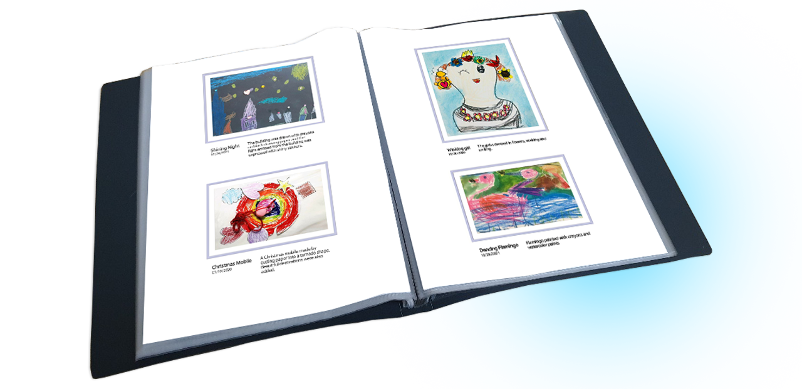

아트북을 PDF로 다운받으세요!
아트북을 PDF로 다운받아 인쇄하여 보관해보세요.
아이의 멋진 작품을 쉽고 간단하게 보관할 수 있는 가장 좋은 방법입니다!

인쇄된 작품을 클리어 파일에 넣어주면 멋진 작품앨범이 완성됩니다.
아이의 작품을 앨범으로 만드는데 많은 시간과 돈을 소비하지 않고 쉽게 만들 수 있어요.

또한 아이의 작품을 나의 컴퓨터나 개별 파일 저장소에 영원히 보관할 수 있어요.
리틀핸즈를 가족들이 꼭 이용하지 않아도 개별 작품앨범 파일을 보낼 수 있답니다.
아이의 멋진 포트폴리오를 손쉽게 만들어보고 싶지 않으신가요?